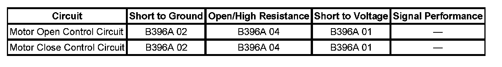

B396A
DTC B396A
DTC DESCRIPTOR
DTC B396A 01
Liftgate Motor Control Circuit Short to Battery
DTC B396A 02
Liftgate Motor Control Circuit Short to Ground
DTC B396A 04
Liftgate Motor Control Circuit Open
DIAGNOSTIC FAULT INFORMATION

Perform the Diagnostic System Check - Vehicle prior to using this diagnostic procedure. Initial Inspection and Diagnostic Overview
CIRCUIT/SYSTEM DESCRIPTION
The liftgate motor is a bi-directional motor and open or close operation is the result of the direction of the motor rotation. The liftgate control module controls the liftgate motor through the control circuits by suppling power and ground in the appropriate polarity. The motor control circuits are monitored by the liftgate control module prior to activation for a high or low condition and during motor operation for any irregular current flow conditions.
CONDITIONS FOR RUNNING THE DTC
- System voltage to the liftgate control module must be 9-16 volts.
- Power open or close function is initiated.
CONDITIONS FOR SETTING THE DTC
- The liftgate control module detects a high or low condition on one of the control circuits prior to being activated.
- During power open or close operation, the liftgate control module detects current flow on one of the control circuits to be greater or less than the learned limits.
ACTION TAKEN WHEN THE DTC SETS
Power liftgate operation will be suspended.
CONDITIONS FOR CLEARING THE DTC
- The DTC will be current for as long as the fault is present.
- When the fault is no longer present, the DTC will be a history status code.
DIAGNOSTIC AIDS
In some circumstances high or low control circuit faults may cause the liftgate control module to react as if the liftgate has encountered an object in its travel and reverse direction.
CIRCUIT/SYSTEM TESTING
1. Disconnect the liftgate control module connector C3.
2. Using a DMM, verify that approximately 1 ohm of resistance is present between the liftgate motor control circuit terminals in the harness connector.
- If excessive resistance is present between the motor control circuits, replace the liftgate motor assembly.
3. Using a DMM, verify that no continuity is present between either of the motor control circuit terminals in the harness connector and ground.
- If continuity is present from a motor control circuit and ground, replace the liftgate motor assembly.
4. If the liftgate motor control circuits test normal, replace the liftgate control module.
REPAIR INSTRUCTIONS
Perform the Diagnostic Repair Verification after completing the diagnostic procedure.
- Power Liftgate Motor Replacement
- Control Module References for liftgate control module replacement, programming and setup. Verification Tests Programming and Relearning